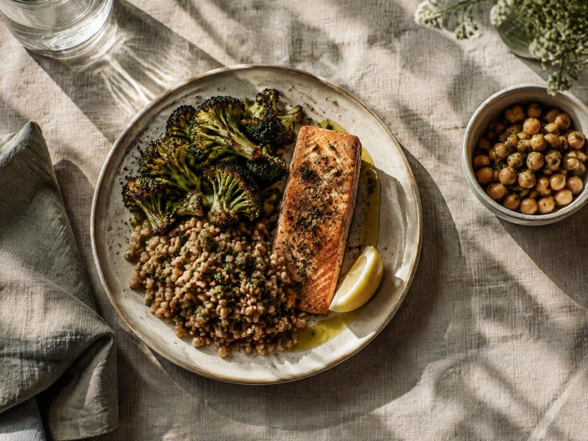

Access
Connect people with practical nutrition learning and food resources.

EatWell Exchange · Community nutrition education
We help communities make nourishing food familiar, practical, and possible.
Community-rooted nutrition education — Since 2017
Our mission
Health education works best when it starts with the food, traditions, and realities already present in a community.

EatWell Exchange empowers communities with knowledge and confidence to eat nutritious food within their own food culture. Our work supports food access and helps decrease health disparities while keeping culturally relevant foods on the table.
Read how EatWell Exchange began ↘Connect people with practical nutrition learning and food resources.
Respect familiar foods, traditions, and lived experience.
Build skills people can carry into everyday meals and decisions.
Our story
Nutrition education can support better health while respecting the foods, traditions, and knowledge people bring to the table.
Three friends start EatWell Exchange with a commitment to nutrition education that honors culture.
Cooking, gardening, and shared learning connect practical nutrition with familiar food traditions.
Community knowledge and lived experience remain central to how EatWell Exchange approaches food and health.
Our impact
The organization’s homepage reports this cumulative reach.
Programs
Hands-on experiences make nutrition knowledge practical, social, and grounded in familiar foodways.
Young people build confidence in the kitchen while exploring nourishing foods and foundational cooking skills.
Explore youth programs ↗A 2–6 month virtual or in-person program centering the food traditions of people of African descent.
Learn about the program ↗Accessible learning sessions connect everyday choices, culinary practice, and cultural food knowledge.
See program details ↗For professionals
Training and professional development help health practitioners make nutrition conversations more relevant to the people they serve.
Ask about trainingMake room for lived experience and community knowledge.
Connect nutrition guidance with culturally familiar meals.
Use relevant tools to support lasting, community-centered change.

Food access
Growing and preparing food can bring people closer to fresh ingredients, practical skills, and one another. EatWell Exchange connects nutrition education with hands-on ways to engage with food.
Resources & events
Explore ideas and opportunities from EatWell Exchange.
Find approachable inspiration for culturally rooted meals.
Learn from conversations about food, health, and community.
Hear stories and perspectives on nutrition and food culture.
See ways to take part in community learning experiences.
Our team
Meet the leadership behind EatWell Exchange.
Director
Registered dietitian focused on wellness, family, culture, food access, and community education.
Director
Registered dietitian and diabetes care and education specialist focused on practical nutrition habits and culturally relevant community education.
Connect on LinkedIn ↗Get involved
Bring your time, resources, or support to community programs that make nutrition education more accessible.
Let’s connect
We’d love to hear from community members, organizations, and professionals.
Email EatWell ExchangeConnect with Jasmine on LinkedIn ↗Make your own palette
For clear contrast, pair a light page with dark text or a dark page with light text.